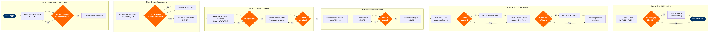

| Step | L4 Step Name | KPI / Target | Pain Point / Risk | Gate |
|---|---|---|---|---|
| 1.1 | Ingest real-time disruption alerts from ops systems | Alert-to-acknowledgement time ≤5 min | Multiple alert streams (weather, ATC, maintenance) arrive in disparate systems with no unified ingestion layer, causing detection delays of 10–20 min during complex events | |
| 1.2 | Classify IROPS trigger type and severity tier | Classification accuracy ≥95%; mis-classification rate <5% | No AI-assisted triage in legacy NOC toolsets; mis-classification delays activation of the correct recovery playbook, costing 15–30 min of recovery time | ⚠ |
| 1.3 | Activate IROPS command structure and war room | War room activation time ≤15 min from trigger classification | Escalation contact lists frequently stale; cross-functional mobilisation relies on manual phone trees rather than automated push notifications, adding 10–20 min delay | |
| 2.1 | Model affected flight propagation in network simulator | Network impact model run time ≤30 min; propagation accuracy ≥90% | SkySYM scenario setup is manual and not pre-loaded with IROPS templates; large weather events affecting 100+ flights can take 30–45 min to model, exceeding recovery window | |
| 2.2 | Identify aircraft and crew positioning conflicts | Conflict identification complete ≤20 min; coverage of 100% of affected pairings | FAR Part 117 duty/rest legality checks are sequential in Jeppesen; large-scale events overwhelm manual review, and reserve pool visibility is not real-time | ⚠ |
| 2.3 | Estimate disrupted passenger volume and missed connections | Passenger impact estimate accuracy ≥85%; model run time ≤10 min | NRM is not designed for real-time IROPS queries; passenger impact models must be manually triggered outside normal RM workflow, creating data-currency risk | |
| 2.4 | Assess slot and regulatory constraints at affected airports | Slot waiver request accuracy ≥98%; assessment complete ≤15 min | Slot waiver processes vary by country and airport authority; some regions require 24-hour advance notice incompatible with real-time IROPS response timelines | ⚠ |
| 3.1 | Generate recovery schedule scenarios in SkyWORKS | Scenario generation time ≤45 min; minimum 2 viable options produced | SkyWORKS is not optimised for real-time IROPS iteration; manual schedule editing under time pressure increases the risk of SSIM errors propagating to GDS | |
| 3.2 | Evaluate aircraft swap and ferry flight feasibility | Ferry cost vs. delay cost ratio assessed within 30 min; SkyMAX fleet assignment feasibility score ≥0.85 | AMOS maintenance status sync delay (up to 15 min) risks assigning aircraft with open airworthiness items; no automated maintenance-status gate in SkyMAX IROPS workflows | ⚠ |
| 3.3 | Validate crew legality for full recovery plan | 100% FAR Part 117 compliance validated before plan publication; legality check ≤20 min | Iterative crew legality re-checks slow plan finalisation; each SkyWORKS schedule change triggers a full Jeppesen re-validation cycle, compounding delay when multiple iterations are needed | ⚠ |
| 4.1 | Publish revised recovery schedule to PSS and GDS | GDS schedule update latency ≤30 min from approval; distribution completeness 100% of active channels | Multi-channel distribution (Altéa + Sabre + Travelport + NDC) requires sequential pushes with no atomic commit; partial-update windows create booking inconsistencies and duplicate inventory | |
| 4.2 | File slot waivers and coordinate ATC ground delay program | Slot waiver approval rate ≥90%; ATC GDP compliance 100% | ATC GDP parameters change frequently during active weather events; real-time coordination requires a dedicated FAA/EUROCONTROL liaison channel that is not always staffed at smaller carriers | ⚠ |
| 4.3 | Confirm and dispatch aircraft ferry repositioning flights | Ferry flight OTP ≥75%; repositioning within ±2 hrs of recovery plan target | Ferry flight fuel burn is not pre-budgeted in standard IROPS cost models; post-event cost attribution to IROPS events is a manual, multi-week reconciliation process | |
| 5.1 | Initiate automated passenger rebooking | Automated rebooking rate ≥70%; passenger notification delivered ≤30 min of flight cancellation | Altéa automated rebooking rules are not always tuned for IROPS scenarios; high-volume events exhaust available recovery inventory before all passengers are rebooked, forcing costly offline handling | ⚠ |
| 5.2 | Activate reserve crew and complete crew reassignments | Reserve activation time ≤45 min; crew coverage rate ≥98% of recovery flights | Reserve crew contact and activation is phone-based at many carriers; no push-notification system for mass activation means manual calling campaigns during high-stress IROPS events | ⚠ |
| 5.3 | Issue passenger care and compensation entitlements | DOT / EU261 compensation filing accuracy ≥99%; voucher issuance within 60 min of entitlement trigger | Compensation eligibility rules differ by jurisdiction (DOT, EU261, ANAC, DGAC); no unified entitlement engine forces manual legal review for international itineraries, creating under- or over-payment risk | |
| 6.1 | Conduct post-IROPS cost and performance analysis | Report delivered ≤72 hrs post-event; cost capture accuracy ±2% | Cost data is scattered across Altéa (compensation), SAP (vendor invoices), and Jeppesen (crew overtime); manual reconciliation typically takes 5–7 business days, delaying learning cycle | |
| 6.2 | Update IROPS recovery playbooks and SkySYM scenario library | Playbook updated within 30 days of event; ≥1 new SkySYM scenario created per Tier 2+ IROPS | Playbook updates are routinely deprioritised once normal operations resume; institutional recovery knowledge is frequently lost without a mandatory structured capture and review process | ⚠ |